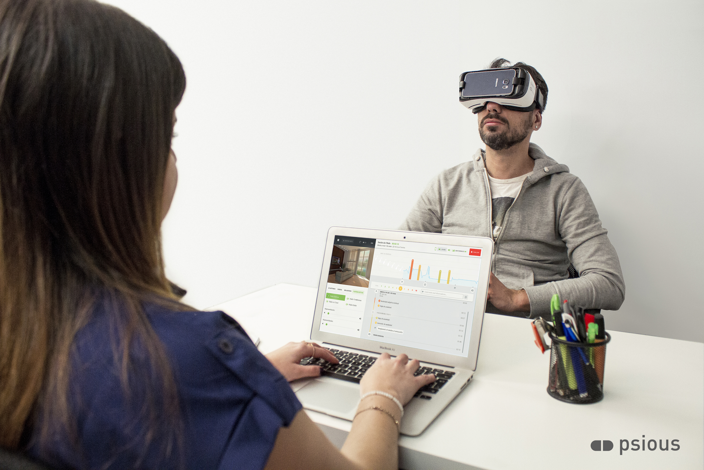
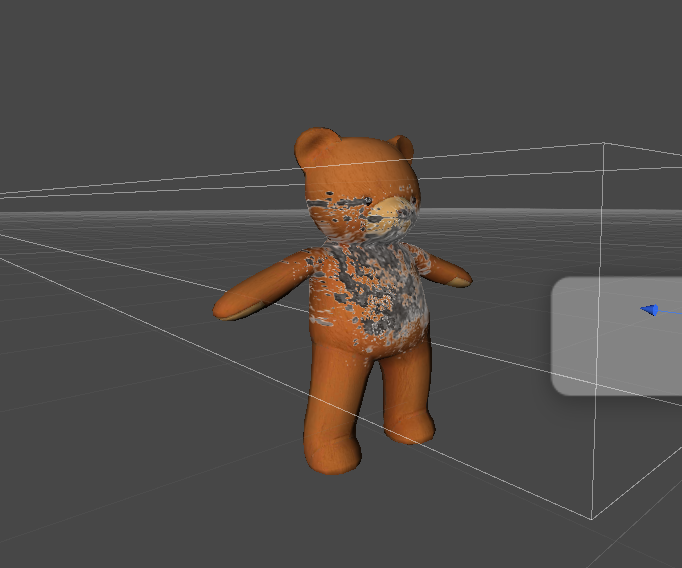

(Anxiety) Therapy

Toen ik klein was heb ik last gehad van een trauma waar ik moeite mee had om het te verwerken. Hierdoor kreeg ik paniek aanvallen. Samen met mijn moeder ben ik toen langs een therapeut gegaan die mij ging helpen met het verwerken van mijn trauma door middel van EMDR therapie.
EMDR staat voor Eye Movement Desensitization and Reprocessing. Tijdens deze behandeling vraagt de therapeut om aan de gebeurtenis terug te denken, inclusief de bijbehorende beelden, gedachten en gevoelens. Mijn idee was, om dit nog echter te maken door een VR bril te gebruiken, die gekoppeld is aan je gedachtes en wat de persoon beschrijft. Zo krijgt hij de beelden weer heel realistisch te zien. Hierbij is ook de mogelijkheid dat de therapeut mee kan kijken op een scherm, als de persoon hiermee akkoord gaat. Zo heeft de therapeut ook een beter idee van wat de persoon heeft meegemaakt.
Public transport
Het milieu is heel belangrijk want het gaat steeds slechter in de wereld. Het probleem is dat weinig mensen er bewust van zijn of het zich niet veel aantrekken. Veel mensen zijn bezig dit te verbeteren.
Mijn idee was om het openbaar vervoer leuker te maken en mensen stimuleren minder de auto te nemen. Door op de ramen iets verrassende weer te geven is dit leuk voor de passagiers. Ze zien de buiten wereld zoals het altijd te zien is in een tram, maar met virtuele dingen tussen door. Dit zijn dingen als vogeltjes die heel dicht bij komen, bomen die je ziet groeien met mooie bloemen eraan, etc. Het raam is interactief, je kan zorgen dat vogeltjes eten krijgen, je kan de plantjes en bomen water geven en ze zien groeien. Ook worden de auto’s geblurd, en zie je alleen de milieu bewusten dingen door de ramen heen. Een wereld zoals we het willen zien voor het milieu.
Art

Wanneer ik zelf naar een museum ga merk ik dat ik het op sommige momenten niet interessant genoeg vond omdat ik zelf niks kon doen behalve kijken. Vooral vroeger had ik dit. Nu dacht ik aan een museum waar de bezoekers hun eigen kunst maken, en dit bekijken. Mensen zijn veel creatiever dan dat ze denken. Ik zelf kan soms aan de gekste dingen denken, en om mij heen hoor ik dat mensen soms benieuwd zijn om een kijkje in mijn hoofd te nemen, wat ik allemaal denk. Zelf ben ik ook heel nieuwsgierig naar wat andere denken. Wat als dat een keer in beeld werd gebracht?
In het museum zijn er verschillende vragen of woorden die de bezoeker moet lezen. Door deze vragen gaan de bezoekers aan bepaalde dingen denken, vaak is dit iets heel anders als wat een ander denkt of voor zich ziet. Via een apparaatje wat de hersenactiviteit van de bezoeker leest word dit geprojecteerd in 3D in een bepaalde ruimte. Zo kan je bij de zelfde vraag of zin zien waar andere bezoekers aan denken. In elke ruimte is een andere vraag of zin en staan of lopen de gedachtes van andere bezoekers rond.